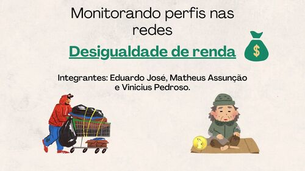
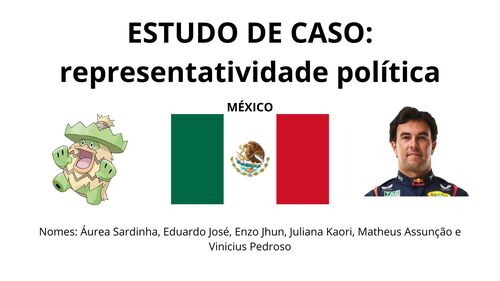

Primeiro ano 1º
No primero ano do ensino médio, fiz:
Segundo ano 2º
No segundo ano do ensino médio, fiz:
Terceiro ano 3º
No meu terceiro e último ano do ensino médio, pensando em Ciências Humanas, tive muitas aulas e fiz muitos trabalhos legais. Como:

Neste trabalho, pesquisamos e analizamos diferentes perfis disponibilizados pela professora. Esses perfis são projetos tentam combater de alguma forma a desigualdade social.

Esta pesquisa aponta o tema de representatividade política das mulheres no México. Usando a atual (em 12/2024) presidente como exemplo.